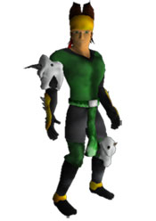

8 |
De Kampioenen |
 |
De kampioenen Naam: Jen Comu Achtergrond: Maar Jen gelooft dat de Draken bevrijdt moeten worden om Nakiha te regeren. Dus na haar vertrek uit de Draken tempel, op zoek naar de Draken Meester van het Water, verscheurt ze haar koninklijke kleding en vermomt ze zich als bedelaar om zo haar afkomst als kampioen van Serengania te verhullen. Nu, als wilde en ongetemde Draken priesteres, volgt ze haar eigen weg om de Boeken der Draken te verenigen en zo de Draken te bevrijden.
Naam: Elziath Achtergrond: 300 jaar geleden was Elziath een van de belangrijkste magische personen die de Draken naar de grote ijsvlakten verdreven. Vrezend dat de Draken Meesters de mensheid verwoesten of tot slaven van de duivelse macht maken, heeft Andera hun oude kampioen laten herleven om het Boek van het bot te dragen en de Draken Meesters met hun verwanten terug te sturen naar de elementen waaruit ze gemaakt zijn. Ondanks zijn leeftijd is Elziath verzadigd met aardse magie. Zijn vaardigheid en kennis is ongeëvenaard, alleen de ambitie van de andere kampioenen kan hem verslaan. In het bezit van het Boek van het bot en het geheim van de aardse magie zoekt Elziath nu naar de Boeken van de Schub, de Klauw en het Vuur. Daarmee kan hij verzekeren dat de Draken Meesters naar hun elementen terug gaan en hij in vrede kan rusten. Naam: Muru Moko  Achtergrond: Muru Moko was bezeten door een wil naar macht. Hij was van plan om de Draken te bevrijden en de titel van Draken Meester, heerser over de Draken en koning van Serengania, te claimen. Om zijn ambitie waar te maken, reisde hij naar Arkhoniar en overtuigde de koning om hem het Boek van de klauw te laten gebruiken en daarmee de Draken te bevrijden. Nadat de Draken Meesters eenmaal bevrijd waren stal Muru Moko het Boek van de klauw. Nu streeft hij zijn eigen doel na, om de Boeken samen te brengen en zo heerschap over alle Draken te krijgen en zichzelf uit te roepen tot Draken Meester en koning van Serengania.
Naam: Vourak Achtergrond: Vourak, demon heerser van de oude ridderorde, werd opgeroepen om als kampioen voor Daeroviar op pad te gaan. Weggehaald uit het rijk van Vragalis, heer der vernietiging, Vouraks liefde voor Vuur en vernietiging drijven elke actie. Mocht Vourak slagen om de Draken Boeken bij elkaar te brengen dan maakt hij de Draken als zijn slaven en gebruikt hij ze om alles in zijn pad te verbranden, vermorzelen en te vernietigen. Hij houdt vast aan het Ra Ra Avis geloof dat alleen de sterkste overleven. |


 |
 |
 |